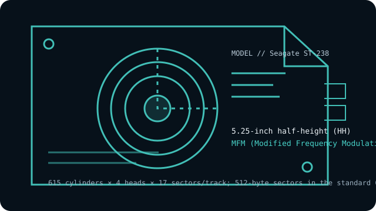

[ INDIVIDUAL COMPONENT // HARD DISK DRIVES ]
Seagate ST-238
20 MB-class 5.25-inch half-height MFM drive; ST-412 cabling. Not the RLL ST-238R. This entry describes the named model, not every drive with similar markings.

IDENTIFICATION: Record the complete label, suffix, revision and controller details before handling. Do not substitute a related model’s geometry or encoding based on appearance alone.
Model specifications
| Exact model | Seagate ST-238 |
|---|---|
| Catalog classification | MFM and early magnetic drives |
| Capacity | 20 MB formatted (model specifications commonly state approximately 20 MB) |
| Form factor | 5.25-inch half-height (HH) |
| Interface | ST-412-compatible, separate 34-pin control and 20-pin data cables |
| Recording method | MFM (Modified Frequency Modulation); this is the non-R ST-238, not an RLL-certified model |
| Drive geometry | 615 cylinders × 4 heads × 17 sectors/track; 512-byte sectors in the standard CHS setup |
| Host-controller compatibility | A PC/AT ST-506/ST-412 MFM controller that supports 615/4/17, matching control/data cables, drive select, termination and low-level formatting. Do not configure it as the ST-238R or assume a generic PC BIOS type is exact. |
| Historical caveat | The later ST-238R is a distinct RLL version with a different sectors-per-track setup and rating. Do not apply the R suffix model’s 26-sector RLL geometry to this MFM drive. |
Host-controller compatibility
A PC/AT ST-506/ST-412 MFM controller that supports 615/4/17, matching control/data cables, drive select, termination and low-level formatting. Do not configure it as the ST-238R or assume a generic PC BIOS type is exact.
- Confirm the full model and revision on the label, controller make/model, cable pinouts, power requirements, drive-select jumpers, and termination before connection.
- Verify that the controller supports the exact encoding, CHS geometry and sector size shown above; controller and BIOS translations can vary between systems.
- Do not attach this drive directly to modern SATA, IDE/ATA, SCSI or USB ports. Any bridge must explicitly support the legacy ST-506/ST-412 signaling and drive format; connector resemblance is not electrical compatibility.
Historical and preservation notes
This ST-238 record refers only to the MFM version. Revisions, controller timing and the exact label matter; old ST-506-class drives need controller-specific low-level setup rather than plug-and-play detection.
These drives are decades old. If data matters, avoid exploratory low-level formatting, repeated power cycling or writes; preserve the original controller settings and seek qualified recovery help for a failing mechanism. Treat any catalog capacity as approximate until the original manual and host configuration are checked.
Sources & further reading
- Seagate ST-412 OEM Manual (archival scan)OEM family manual for ST-412-compatible models and interface setup; compare the exact ST-238 label and revision.
- Seagate ST-412 Installation HandbookInstallation and compatibility guidance for the ST-412 drive family; family documentation is not a substitute for a model/revision label.
Use the model-specific documentation for the full label and revision. Third-party archival listings are useful cross-references but may summarize a family or use rounded capacity values.